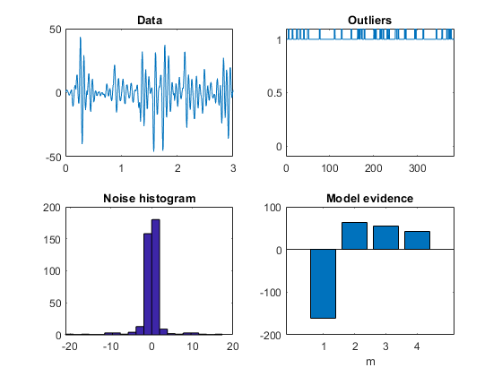

clear all
close all
secs=3;
ns=128;
t=[1/ns:1/ns:secs];
N=length(t);
m=2;
mix.m=m;
mix.state(1).prior=0.9;
mix.state(2).prior=0.1;
mix.state(1).m=0;
mix.state(2).m=0;
mix.state(1).C=1;
mix.state(2).C=100;
[noise,gamma_true]=spm_samp_mix(mix,N);
new_index=randperm(N);
noise=noise(new_index);
gamma_true=gamma_true(new_index);
a_true=[-1.8517,1.3741,0.1421,-0.6852,0.3506];
p_true=length(a_true);
y=filter(1,[1,a_true],noise);
y=y(1:N);
ar=spm_ar(y,p_true);
[rar,yclean] = spm_rar(y,p_true,m);
rar3=spm_rar(y,p_true,3);
rar4=spm_rar(y,p_true,4);
fm=[ar.fm,rar.fm,rar3.fm,rar4.fm];
fm=fm-mean(fm);
figure
subplot(2,2,1);
plot(t,y);
title('Data');
subplot(2,2,3);
hist(noise,20);
title('Noise histogram');
subplot(2,2,2);
[tmp,outlier]=min(rar.pi);
standard=m+1-outlier;
plot(gamma_true);
title('Outliers');
axis([0 N -0.1 1.1]);
subplot(2,2,4);
bar(fm);
title('Model evidence');
xlabel('m');
disp(' ');
disp('OUTLIER DETECTION:');
pos_prob=rar.gamma(outlier,find(gamma_true==1));
sens=length(find(pos_prob>0.5))/length(pos_prob);
neg_prob=rar.gamma(standard,find(gamma_true==0));
spec=length(find(neg_prob>0.5))/length(neg_prob);
disp(sprintf('Proportion of outliers correctly detected = %1.2f',sens));
disp(sprintf('Proportion of standards correctly detected = %1.2f',spec));
disp(' ');
disp('ACCURACY OF AR COEFFICIENT ESTIMATION:');
d_ar=norm(ar.a_mean-a_true');
d_rar=norm(rar.posts.a_mean-a_true');
disp(sprintf('Error for AR=%1.3f',d_ar));
disp(sprintf('Error for RAR=%1.3f',d_rar));
disp(sprintf('Ratio E_RAR/E_AR=%1.3f',d_rar/d_ar));
OUTLIER DETECTION:
Proportion of outliers correctly detected = 0.00
Proportion of standards correctly detected = NaN
ACCURACY OF AR COEFFICIENT ESTIMATION:
Error for AR=0.084
Error for RAR=0.041
Ratio E_RAR/E_AR=0.492
